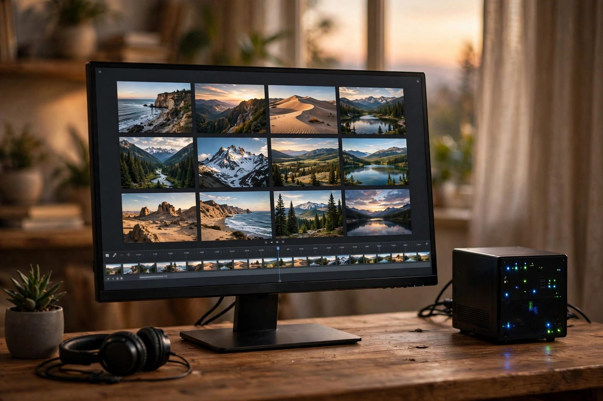

Self-Hosted Photo Server
Personal photo management with ML face recognition: photo.tyfsadik.org

Overview
This project is a self-hosted Immich instance deployed at photo.tyfsadik.org that provides Google Photos-equivalent functionality with full data ownership. Immich handles automatic mobile photo backup, timeline browsing, album organization, and search. The machine-learning service runs face recognition, object detection, and CLIP-based semantic search, enabling queries like "beach sunset" without any tagging.
The stack runs on Docker Compose with PostgreSQL as the metadata database
(using Immich's official PostgreSQL image with the VectorChord extension for vector
similarity search used by the ML features), Valkey (under the compose
service name redis) for job queuing, and a dedicated
machine-learning service that runs the ML workloads separately from the
main server process. Files are stored on a local volume backed by the Proxmox ZFS dataset
and mounted at /data in the server container, which listens on port
2283. The mobile app enables background backup over Wi-Fi, keeping the photo
library current without any manual steps.
Architecture
Tech Stack
- Immich, self-hosted Google Photos alternative with mobile backup
- PostgreSQL + VectorChord, Immich's official PostgreSQL image with the vector extension for ML similarity search
- Valkey, job queue for background ML processing tasks (compose service name
redis) - Immich machine-learning service, dedicated ML container for face recognition and object detection
- Docker & Docker Compose, service orchestration
- Nginx, SSL reverse proxy for photo.tyfsadik.org
- Let's Encrypt, TLS certificate management
Build Process
Download Immich docker-compose.yml and .env
Immich provides an official Docker Compose file that defines all required services.
The .env file contains the upload location path, database credentials,
and version pin. These are the only two files needed to get a working stack.
mkdir immich && cd immich
# Download official compose file and env template
wget -O docker-compose.yml \
https://github.com/immich-app/immich/releases/latest/download/docker-compose.yml
wget -O .env \
https://github.com/immich-app/immich/releases/latest/download/example.env
# Review what services are defined
cat docker-compose.yml | grep "^ [a-z]" | grep ":"Configure UPLOAD_LOCATION and Credentials in .env
The .env file is edited to set the upload path to the ZFS-backed volume
mount point, and strong random passwords are generated for the database. The
IMMICH_VERSION is pinned to a specific release for reproducibility.
# .env configuration
UPLOAD_LOCATION=/mnt/photos/immich
DB_DATA_LOCATION=/mnt/photos/postgres
# Generate a secure password and store it in .env (never commit this file)
DB_PASSWORD=$(openssl rand -hex 32)
echo "DB_PASSWORD=$DB_PASSWORD" >> .env
DB_USERNAME=immich
DB_DATABASE_NAME=immich
# Pin to the same release as the compose file you downloaded
# (check the releases page; the compose file and IMMICH_VERSION must match)
IMMICH_VERSION=<release-tag>Start the Stack
The full stack is brought up with Docker Compose. First startup takes several minutes as Docker pulls the images (server, machine-learning, PostgreSQL, Valkey). The ML models are downloaded on first use when the machine-learning service starts processing a photo.
docker compose up -d
# Watch startup logs
docker compose logs -f
# Verify all containers are healthy
docker compose ps
# Check the server is responding
curl http://localhost:2283/api/server-info/ping
# Expected: {"res":"pong"}Nginx Reverse Proxy Configuration
Nginx is configured to proxy photo.tyfsadik.org to the Immich server container.
The client_max_body_size is set generously to support large video file
uploads. WebSocket connections are proxied for real-time upload progress updates.
# /etc/nginx/sites-available/photo.tyfsadik.org
server {
listen 80;
server_name photo.tyfsadik.org;
return 301 https://$host$request_uri;
}
server {
listen 443 ssl;
server_name photo.tyfsadik.org;
ssl_certificate /etc/letsencrypt/live/photo.tyfsadik.org/fullchain.pem;
ssl_certificate_key /etc/letsencrypt/live/photo.tyfsadik.org/privkey.pem;
client_max_body_size 50G;
location / {
proxy_pass http://localhost:2283;
proxy_http_version 1.1;
proxy_set_header Upgrade $http_upgrade;
proxy_set_header Connection "upgrade";
proxy_set_header Host $host;
proxy_set_header X-Real-IP $remote_addr;
proxy_set_header X-Forwarded-Proto https;
proxy_read_timeout 600s;
proxy_send_timeout 600s;
}
}
ln -s /etc/nginx/sites-available/photo.tyfsadik.org /etc/nginx/sites-enabled/
nginx -t && systemctl reload nginxProvision SSL Certificate
Certbot provisions the Let's Encrypt certificate and modifies the Nginx config to redirect HTTP to HTTPS. A systemd timer handles automatic renewal 30 days before expiry.
apt install certbot python3-certbot-nginx -y
certbot --nginx -d photo.tyfsadik.org \
--agree-tos --email taki@tyfsadik.org
# Verify auto-renewal is configured
systemctl status certbot.timer
# Test renewal without actually renewing
certbot renew --dry-runInstall Mobile App and Enable Auto-Backup
The Immich mobile app is installed from the App Store or Play Store. The server URL
is set to https://photo.tyfsadik.org. Auto-backup is configured to run
over Wi-Fi only, with background sync enabled. For existing photo libraries, a bulk
import job is run via the Immich web interface to scan the upload directory.
# For bulk importing an existing photo directory, use the supported CLI
# (do not copy files directly into the managed upload directory)
npm install -g @immich/cli
# Create an API key in the web UI (Account settings > API keys), then authenticate with it
immich login-key https://photo.tyfsadik.org/api <your-api-key>
immich upload /path/to/existing/photos --recursive
# Or: expose the directory as an external library, then scan from the web UI:
# Administration > Libraries > Create external library, then Jobs > Scan
# Monitor ML processing jobs
docker compose logs -f immich-machine-learning | grep "Running job"Request Flow
Challenges & Solutions
-
ML service consuming too much RAM: The face recognition and CLIP
models together used several gigabytes of RAM, leaving little headroom for PostgreSQL
and the main server. Resolved by adding Docker resource constraints
(
mem_limit: 2g) in the compose file and configuring the ML service to unload models from memory after a period of inactivity using theMODEL_TTLenvironment variable. - Large initial library import taking a long time: Importing a large existing library (tens of thousands of photos) via the mobile app one by one was impractical. Used the Immich CLI bulk upload utility to push files through the API as a batch job instead of copying them into the managed upload directory.
-
PostgreSQL vector extension not found: The database image initially used
lacked the vector extension Immich requires. Switched to the official
ghcr.io/immich-app/postgresimage, which bundles the required extensions (currently VectorChord). - Video thumbnails not generating: The machine-learning container failed to generate video thumbnails because FFmpeg was not installed in a custom image variant. The official Immich server image includes FFmpeg, resolving the issue after switching back to the canonical image tag.
What I Learned
- Docker Compose multi-service architectures with health checks and dependency ordering
- PostgreSQL vector extensions (VectorChord) and their use in ML-powered search
- Valkey job queue patterns for decoupling ML processing from the request path
- Docker resource constraints (mem_limit, cpus) for shared low-resource servers
- ML model lifecycle management: lazy loading, TTL-based unloading, warm vs cold inference
- Mobile app background sync behavior and Wi-Fi-only backup configuration
How I built it
Google Photos is convenient right up until you think about who trains on your pictures. Immich replicates the experience, automatic mobile backup, timeline, albums, and semantic search, while the originals never leave my disks.
- Phase 1, deploy the official stack: Downloaded Immich's official docker-compose.yml and example.env; those two files define every service needed.
- Phase 2, point at real storage: Set the upload location to the ZFS-backed volume, generated strong database passwords, and pinned IMMICH_VERSION to a specific release for reproducible upgrades.
- Phase 3, publish securely: Put Nginx in front with a Let's Encrypt certificate at photo.tyfsadik.org.
- Phase 4, enable the ML features: Brought up the machine-learning service so face recognition, object detection, and CLIP semantic search run locally.
- Phase 5, turn on mobile backup: Configured the Immich mobile app for automatic background upload from phones.
What you need
| Category | Item | Notes |
|---|---|---|
| Hardware | Server with enough disk for the photo library | Originals plus thumbnails; ZFS recommended for integrity |
| Hardware | Optional GPU for the ML container | Speeds up face recognition and CLIP embedding on large libraries |
| Software | Docker and Docker Compose | Runs Immich, its PostgreSQL image with VectorChord, Valkey, and the ML service |
| Accounts | A domain with DNS control | For the TLS certificate on the public hostname |
| Skills | Docker Compose env management | Version pins and credential handling in the .env file |
Challenges and lessons learned
- Initial library scan: the first ML pass over a large existing library is CPU-heavy and slow. Lesson: let the initial scan run to completion and only judge performance after it finishes.
- Version pinning versus new features: pinning keeps upgrades safe but delays features. Lesson: track the release notes and upgrade on a schedule instead of drifting behind.
- Duplicate handling: years of manual copies mean duplicates. Lesson: run Immich's duplicate detection review before treating the library as canonical.
What is next
- Set up shared albums so family members get their own libraries with sharing.
- Build a routine for reviewing and naming recognized faces.
- Add an S3-compatible offsite copy of originals for disaster recovery.
- Track HDR and RAW handling improvements in upstream releases.